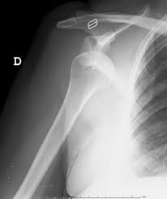

Ficha del catálogo
Luxación anterior de hombro
- Sistema
- Óseo
- Modalidad
- RX
- Región
- Hombro
- Dificultad
- Básico
La articulación glenohumeral es la más inestable del cuerpo y su luxación más común es la anterior, en la que la cabeza humeral se desplaza por delante y por debajo de la glenoides. Ocurre por un mecanismo de abducción y rotación externa forzadas, tanto en deportistas jóvenes como en ancianos tras una caída. La recidiva es frecuente cuando el primer episodio sucede antes de los treinta años.
Técnica
Proyección anteroposterior verdadera de hombro complementada siempre con una proyección axial o en Y de escápula, que es la que informa de la dirección del desplazamiento.
Qué observar
- Cabeza humeral desplazada hacia abajo y adentro, en posición subcoracoidea
- Pérdida de la superposición normal entre cabeza humeral y reborde glenoideo
- Escotadura de impactación en la cara posterolateral de la cabeza humeral
- Fractura del reborde glenoideo anteroinferior, que condiciona inestabilidad residual
- Fractura asociada del troquíter, sobre todo en pacientes mayores
- Control tras la reducción para confirmar la congruencia articular
Hallazgos
Cabeza humeral fuera de la cavidad glenoidea, situada por delante y por debajo de esta, con pérdida de la congruencia articular y frecuentes lesiones óseas por impactación.
Perlas
La proyección frontal aislada puede engañar. La luxación posterior, mucho menos frecuente y ligada a crisis convulsivas y electrocución, se reconoce por la cabeza humeral en rotación interna fija con aspecto redondeado y por el ensanchamiento del espacio glenohumeral.
Diagnóstico diferencial
- Luxación posterior
- Cabeza en rotación interna fija y desplazada hacia atrás en la proyección axial.
- Luxación acromioclavicular
- El desplazamiento afecta al extremo distal de la clavícula, no a la cabeza humeral.
- Fractura del cuello humeral
- Hay trazo óseo pero la cabeza permanece dentro de la glenoides.
Simuladores
- Proyección mal centrada que simula descoaptación
- Subluxación inferior por hemartros
- Parálisis con caída de la cabeza humeral
Por modalidad
- RX
- Diagnóstico y control postreducción
- TC
- Cuantifica la pérdida ósea glenoidea antes de la cirugía
- RM
- Valora las lesiones labrales y del manguito rotador
Protocolo
Anteroposterior verdadera y proyección en Y de escápula o axial antes y después de la reducción. Estudio seccional si se plantea cirugía de estabilización.
Clasificación
Se clasifican por dirección en anterior, posterior e inferior. La anterior representa la gran mayoría de los casos.
Errores frecuentes
- Informar solo con la proyección frontal y pasar por alto una luxación posterior
- No revisar el reborde glenoideo ni el troquíter tras la reducción
- Olvidar explorar y documentar el estado neurovascular en el informe clínico

hombro luxacion glenohumeral inestabilidad trauma urgencias reduccion